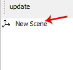
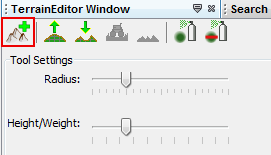
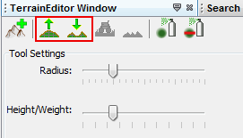
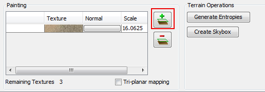
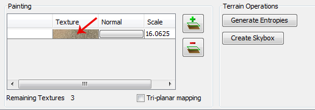
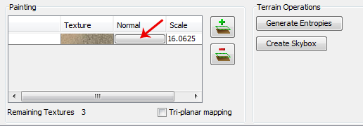
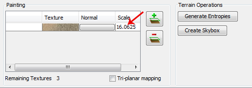

jMonkeyEngine SDK: Terrain Editor
The terrain editor lets you create, modify, and paint terrain.
Controls
Terrain controls are the same as the Scene Composer, you rotate the camera with the left mouse button and pan the camera with the right mouse button. Until you select one of the terrain tools in the toolbar, then the controls change for that tool. Then left mouse button will use that tool: painting, raising/lowering terrain, etc. The right mouse button might do something, depending on the tool.
Creating Terrain
To create terrain, first select the Scene directory under your Project Assets folder, right click and select . This will generate an empty scene in that directory. Right click this new file and then select Edit Terrain. This will open the new file in the TerrainEditor and display your scenes file structure in the SceneExplorer located at the bottom left window of the SDK. In the SceneExplorer window, select a node (usually your root node) in your scene.

Then click the add terrain button.

This will pop up the Create Terrain wizard that will walk you through the steps for creating terrain. Make sure you decide now how large you want your terrain to be and how detailed you want the textures to be as you cannot change it later on!
In order to see the terrain, you will need to add light to your scene. To do this, right-click the root node in the SceneExplorer window and select . Alternatively, you can create your terrain and press the Toggle cam light button located in the menu at the top of the open terrain window. You will need to add a light to your scene by code in the simpleinitApp() method later so you can see the terrain.
Step 1: Terrain Size
Here you determine the size of your terrain, the total size and the patch size. You should probably leave the patch size alone. But the total size should be defined; this is how big your terrain is.
Step 2: Heightmap
Here you can select a heightmap generation technique to give you a default/random look of the terrain. You can also select a heightmap image to pre-define how your terrain looks. By default, it will give you a flat terrain.
Step 3: Alpha Image Detail
This step determines how large the alpha blend images are for your terrain. The smaller the alpha image, the less detailed you can paint the terrain. Play around with this to see how big you need it to be. Remember that terrain does not have to be that detailed, and is often covered by vegetation, rocks, and other items. So having a really detailed texture is not always necessary.
Modifying Terrain
Right now there are two terrain modification tools: raise and lower terrain.

There are two sliders that affect how these tools operate:
-
Radius: how big the brush is
-
Weight/Height: how much impact the brush has
Once a tool is selected, you will see the tool marker (now an ugly wire sphere) on the map where your mouse is. Click and drag on the terrain to see the tool change the height of the terrain.
Painting Terrain
Your terrain comes with one diffuse default texture, and you can have up to 12 total diffuse textures. It also allows you to add normal maps to each texture layer. There can be a maximum of 13 textures, including Diffuse and Normal (3 textures are taken up by alpha maps).
All of the textures can be controlled in the Texture Layer table by clicking on the textures. There are two sliders that affect how the paint tool operates:
-
Radius: how big the brush is
-
Weight/Height: how much impact the brush has.
Adding a new texture layer
Adds a new texture layer to the terrain. The will be drawn over top of the other texture layers listed above it in the list.

Changing the diffuse texture
Click on the diffuse texture image in the texture table. This will pop up a window with the available textures in your assets directory.

Adding a normal map to the texture layer
When you add a texture layer, by default it does not add a normal map for you. To add one, click on the button next to the diffuse texture for that texture layer. This will pop up the texture browser. Select a texture and hit Ok, and you are done.

Removing a normal map from the texture layer
To remove a normal map from the texture layer, hit the normal map button for that texture layer again, and deselect the texture. Then hit Ok and the texture should be removed.
Changing the texture scale
The field in the table to the right of the diffuse and normal textures for your texture layer is the scale. Changing that value changes the scale of the texture.

You will notice that the scale changes when you switch between Tri-Planar and normal texture mapping. Tri-planar mapping does not use the texture coordinates of the geometry, but real world coordinates. And because of this, in order for the texture to look the same when you switch between the two texture mapping methods, the terrain editor will automatically convert the scales for you.
Essentially if your scale in normal texture coordinates is 16, then for tri-planar gets converted like this: 1/terrainSize/16
Tri-planar texture mapping
Tri-planar texture mapping is recommended if you have lots of near-vertical terrain. With normal texture mapping the textures can look stretched because it is rendered on the one plane: X-Z. Tri-planar mapping renders the textures on three planes: X-Z, X-Y, Z-Y; and blends them together based on what plane the normal of the triangle is facing most on. This makes the terrain look much better, but it does have a performance hit! Here is an article on tri-planar mapping: https://developer.nvidia.com/gpugems/GPUGems3/gpugems3_ch01.html
Total texture count
Terrain will support a maximum of 12 diffuse texture. And a combined total of 13 diffuse and normal maps. Most video cards are limited to 16 texture units (textures), and 3 are used behind the scenes of the terrain material for alpha blending of the textures, so you are left with a maximum of 13 textures.
Generating Terrain Entropies for LOD
If you are using the recommended PerspectiveLodCalculator for calculating LOD levels of the terrain, then you will want to pre-generate the entropy levels for the terrain. This is a slow process. If they are not pre-generated, the LOD control will generate them for you, but this will lag the user when they load the scene, and the terrain will flicker. Use the 'Generate Entropies' button to pre-generate the entropies for the terrain, they will be saved with it. Note that whenever you modify the height of the terrain, you should re-generate the entropies. Of course, don’t do this every time, but maybe just before you are ready to send the map out for testing.
Loading Terrain Into Your Game
There are a few things your code needs to do to load the terrain.
-
You must first use the asset manager to load the scene, see the hello asset tutorial.
-
The terrain (as you can see on the left in the editor) is a sub-node of the scene, so you have to write code to investigate the child nodes of the scene until you find the node that is the terrain, see this tutorial for scene graph concepts.
-
You also have to set the camera on the LOD control in order for it to work correctly:
TerrainLodControl lodControl = ((Node)terrain).getControl(TerrainLodControl.class);
if (lodControl != null)
lodControl.setCamera(getCamera());